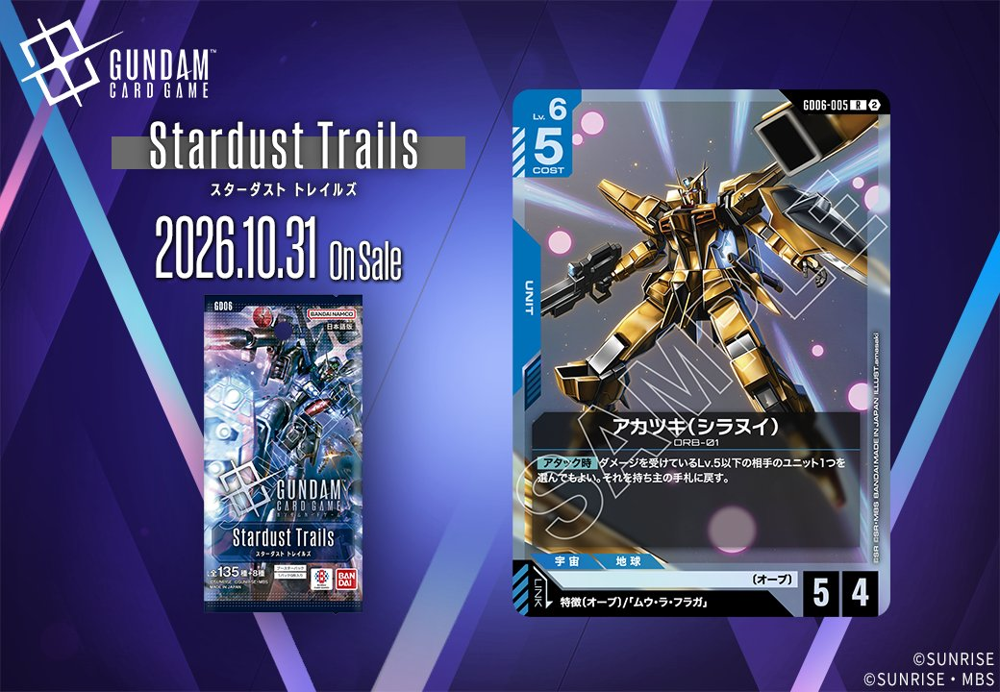
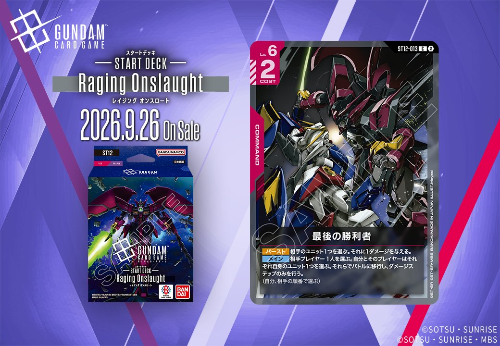

今回は、GD06収録の青のUNIT「アカツキ(シラヌイ)」(GD06-005)と、ST12収録の赤のCOMMAND「最後の勝利者」(ST12-013)の2枚を紹介します。「アカツキ(シラヌイ)」は特徴(オーブ)または「ムウ・ラ・フラガ」を対象とするリンクを持ち、発売日は2026年10月31日です。「最後の勝利者」の発売日は2026年9月26日となっています。

アカツキ(シラヌイ) (GD06-005)
| 色 | 青 | タイプ | UNIT |
| Lv | 6 | コスト | 5 |
| AP | 5 | HP | 4 |
| 特徴 | 〔オーブ〕 | ||
| リンク条件 | 特徴(オーブ)/「ムウ・ラ・フラガ」 | ||
効果: 【アタック時】ダメージを受けているLv.5以下の相手のユニット1つを選んでもよい。それを持ち主の手札に戻す。
アカツキ(シラヌイ)は【アタック時】にダメージを受けているLv.5以下の相手ユニット1つを持ち主の手札に戻せるため、削り済みのユニットを盤面から除去しつつテンポを取れる。手札に戻すバウンスなので、ブロッカー持ちの相手を除去できる点も評価できる。 リンク先の「ムウ・ラ・フラガ」や特徴〔オーブ〕を軸としたユニットとの併用が想定され、M1アストレイ（シュライク装備）の【配備時】1ダメージで相手ユニットにダメージを与えておけば、本体の手札戻し効果の対象を能動的に作れる。2026-10-31発売。

最後の勝利者 (ST12-013)
| 色 | 赤 | タイプ | COMMAND |
| Lv | 6 | コスト | 2 |
効果: 【バースト】相手のユニット1つを選ぶ。それに1ダメージを与える。【メイン】相手プレイヤー1人を選ぶ。自分とそのプレイヤーはそれぞれ自身のユニット1つを選ぶ。それらでバトルに移行し、ダメージステップのみを行う。(自分、相手の順番で選ぶ)
最後の勝利者(ST12-013)はコスト2の赤コマンドで、【バースト】と【メイン】の2つの使い方を持つ点が特徴です。【バースト】は相手ユニット1つに1ダメージを与える受け身の除去、【メイン】は互いにユニットを選んでダメージステップのみのバトルに移行させる能動的な効果で、状況に応じて能動・受動どちらでも運用できます。ダメージステップのみの処理のため通常アタックとは別枠で相手ユニットへダメージを通せる点が評価ポイントです。
関連カード
-
 ストライクフリーダムガンダム(GD05-002)青系デッキ内採用率8.8% (413デッキ)
ストライクフリーダムガンダム(GD05-002)青系デッキ内採用率8.8% (413デッキ) -
 キラ・ヤマト(GD05-081)青系デッキ内採用率8.7% (407デッキ)
キラ・ヤマト(GD05-081)青系デッキ内採用率8.7% (407デッキ) -
 ストライクルージュ（オオトリ装備）(GD05-005)青系デッキ内採用率5.4% (251デッキ)
ストライクルージュ（オオトリ装備）(GD05-005)青系デッキ内採用率5.4% (251デッキ) -
 M1アストレイ（シュライク装備）(GD05-015)青系デッキ内採用率2.4% (110デッキ)
M1アストレイ（シュライク装備）(GD05-015)青系デッキ内採用率2.4% (110デッキ) -
 ストライクルージュ（キラ機）(GD05-010)青系デッキ内採用率1.2% (57デッキ)
ストライクルージュ（キラ機）(GD05-010)青系デッキ内採用率1.2% (57デッキ) -
 格闘戦(ST03-013)赤系デッキ内採用率22.1% (1033デッキ)
格闘戦(ST03-013)赤系デッキ内採用率22.1% (1033デッキ) -
 GQuuuuuuX（オメガ・サイコミュ起動時）(GD03-034)赤系デッキ内採用率16.7% (780デッキ)
GQuuuuuuX（オメガ・サイコミュ起動時）(GD03-034)赤系デッキ内採用率16.7% (780デッキ) -
 資源衛星パラオ(GD01-128)赤系デッキ内採用率14.5% (678デッキ)
資源衛星パラオ(GD01-128)赤系デッキ内採用率14.5% (678デッキ) -
 戦技の向上(GD03-109)赤系デッキ内採用率13.2% (620デッキ)
戦技の向上(GD03-109)赤系デッキ内採用率13.2% (620デッキ) -
 GFreD(GD03-035)赤系デッキ内採用率11% (517デッキ)
GFreD(GD03-035)赤系デッキ内採用率11% (517デッキ)